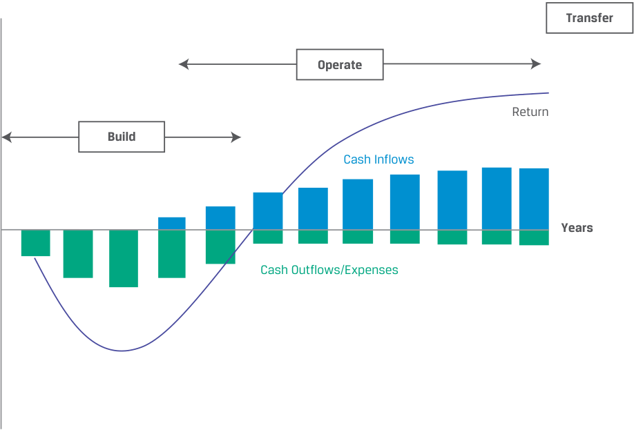
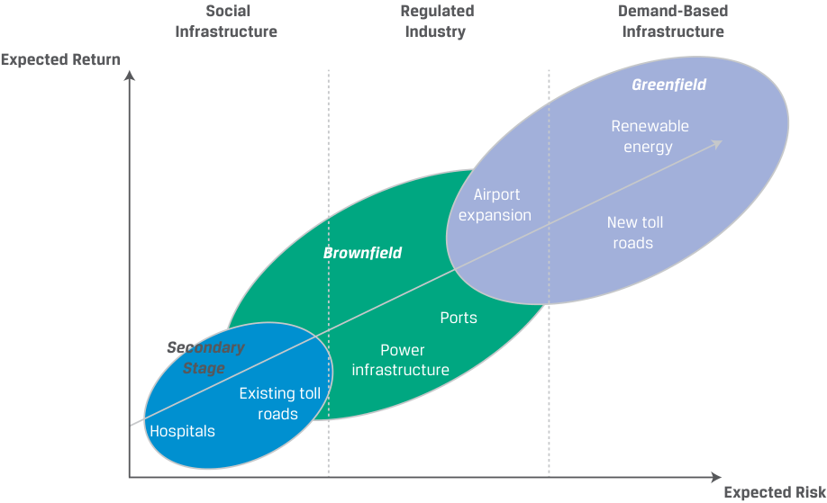

Learning Module 4 Real Estate and Infrastructure - Part 2: Infrastructure Investment Features
Volume 8: Alternative Investments
Learning Module 4 Real Estate and Infrastructure
Part 2/2: Infrastructure Investment Features (PDF Pages 115–128)
Tập 8: Đầu tư Thay thế (Alternative Investments)
Học phần 4: Bất động sản và Cơ sở hạ tầng (Real Estate and Infrastructure)
Phần 2/2: Các Đặc điểm Đầu tư Cơ sở hạ tầng (Trang PDF 115–128)
INFRASTRUCTURE INVESTMENT FEATURES
CÁC ĐẶC ĐIỂM ĐẦU TƯ CƠ SỞ HẠ TẦNG (INFRASTRUCTURE INVESTMENT FEATURES)
4
4
explain features and characteristics of infrastructure
Mục tiêu học tập: giải thích các tính năng và đặc điểm của cơ sở hạ tầng (infrastructure)
Infrastructure investments have a societal purpose; facilitate broad economic, technological, and social development purposes; and usually combine land, buildings, and other long-lived fixed assets. Infrastructure supports public transportation, airports, utilities (water, gas, and electricity), and more recently, information (telecommunication, cable, and wireless networks). Early infrastructure investments were typically financed by private corporations to realize profits. Subsequently, many governments took on a larger proportion of infrastructure investment and by the second half of the 20th century became the main source of investments. The late 20th century saw waves of privatizations of public transportation, and the scope of private infrastructure investment expanded to assets that governments had historically financed, owned, and operated themselves. The market for privately funded infrastructure is sizeable.
Các khoản đầu tư cơ sở hạ tầng có mục đích phục vụ xã hội; tạo điều kiện thuận lợi cho các mục tiêu phát triển kinh tế, công nghệ và xã hội rộng lớn; và thường kết hợp đất đai, tòa nhà cùng các tài sản cố định có vòng đời dài khác. Cơ sở hạ tầng hỗ trợ giao thông công cộng, sân bay, các dịch vụ tiện ích (nước, khí đốt và điện), và gần đây hơn là thông tin (viễn thông, truyền hình cáp và mạng không dây). Các khoản đầu tư cơ sở hạ tầng thời kỳ đầu thường được tài trợ bởi các tập đoàn tư nhân nhằm hiện thực hóa lợi nhuận. Sau đó, nhiều chính phủ đã đảm nhận một tỷ trọng lớn hơn trong đầu tư cơ sở hạ tầng và đến nửa sau thế kỷ 20 đã trở thành nguồn đầu tư chính. Cuối thế kỷ 20 chứng kiến những làn sóng tư nhân hóa giao thông công cộng, và phạm vi đầu tư cơ sở hạ tầng tư nhân đã mở rộng sang những tài sản mà trong lịch sử các chính phủ từng tự mình tài trợ, sở hữu và vận hành. Thị trường dành cho cơ sở hạ tầng được tài trợ bởi tư nhân có quy mô rất lớn.
Infrastructure Investments
Đầu tư Cơ sở hạ tầng (Infrastructure Investments)
Infrastructure investments are real, capital-intensive, and long-lived assets intended for public use and provide essential services, such as airports, health care facilities, and sewage treatment plants. These investments have similarities to and differences from common equity and debt. Investments include equity, with its usual claims to residual cash flows, and debt, to finance and maintain such investments. Like real estate, investment in existing infrastructure involves acquiring unique, illiquid assets with distinct locations, features, and uses. Investments in construction and development of new infrastructure are made with expectations to generate cash either from income or from capital appreciation.
Các khoản đầu tư cơ sở hạ tầng là những tài sản thực, thâm dụng vốn và có vòng đời dài được thiết kế cho mục đích sử dụng công cộng và cung cấp các dịch vụ thiết yếu, chẳng hạn như sân bay, cơ sở chăm sóc sức khỏe và nhà máy xử lý nước thải. Những khoản đầu tư này có những điểm tương đồng và khác biệt so với vốn cổ phần phổ thông và nợ vay. Các khoản đầu tư bao gồm vốn cổ phần, với quyền đòi hỏi thông thường đối với dòng tiền còn lại, và nợ vay, để tài trợ và duy trì các khoản đầu tư đó. Giống như bất động sản, việc đầu tư vào cơ sở hạ tầng hiện hữu liên quan đến việc mua lại các tài sản độc nhất, kém thanh khoản với vị trí, tính năng và công dụng riêng biệt. Các khoản đầu tư vào việc xây dựng và phát triển cơ sở hạ tầng mới được thực hiện với kỳ vọng tạo ra tiền mặt từ thu nhập hoặc từ sự tăng giá vốn.
Infrastructure investments often involve a consortium that combines one or several strategic partners that have specialized operational or technical skills with the financial investors. Rather than leases or rentals from commercial or residential tenants, infrastructure cash flows in most cases arise from contractual payments, such as the following:
Các khoản đầu tư cơ sở hạ tầng thường có sự tham gia của một tổ hợp (consortium) kết hợp một hoặc nhiều đối tác chiến lược có kỹ năng vận hành hoặc kỹ thuật chuyên biệt với các nhà đầu tư tài chính. Thay vì tiền thuê từ các khách thuê thương mại hoặc nhà ở, dòng tiền cơ sở hạ tầng trong hầu hết các trường hợp phát sinh từ các khoản thanh toán theo hợp đồng (contractual payments), chẳng hạn như các hình thức sau:
-
Availability payments , which are payments that are received to make the facility available
-
Usage-based payments , such as tolls and fees for using the facilities
-
“Take-or-pay” arrangements , which obligate buyers to pay a minimum purchase price to sellers for a pre-agreed volume.
-
Thanh toán theo mức độ sẵn sàng (Availability payments), là các khoản thanh toán nhận được nhờ việc duy trì cơ sở hạ tầng ở trạng thái sẵn sàng hoạt động.
-
Thanh toán dựa trên mức độ sử dụng (Usage-based payments), chẳng hạn như phí cầu đường (tolls) và lệ phí sử dụng các cơ sở hạ tầng.
-
Thỏa thuận “nhận hoặc trả” (“Take-or-pay” arrangements), buộc người mua phải trả một mức giá mua tối thiểu cho người bán đối với một sản lượng đã thỏa thuận trước.
Allocations to infrastructure investments are driven both by the increased demand for infrastructure and by many governments’ search for alternative funding sources for infrastructure investments, such as investors interested and experienced in building, managing, and running infrastructure. Investors have an interest in financing infrastructure investments, demand-side growth. As governments provide more opportunities by expanding infrastructure assets, they also continue to privatize government services.
Việc phân bổ vốn vào các khoản đầu tư cơ sở hạ tầng được thúc đẩy bởi cả nhu cầu ngày càng tăng đối với cơ sở hạ tầng lẫn việc nhiều chính phủ tìm kiếm các nguồn tài trợ thay thế cho đầu tư cơ sở hạ tầng, chẳng hạn như các nhà đầu tư có sự quan tâm và kinh nghiệm trong việc xây dựng, quản lý và vận hành cơ sở hạ tầng. Các nhà đầu tư có mối quan tâm đến việc tài trợ cho các khoản đầu tư cơ sở hạ tầng và sự tăng trưởng từ phía cầu. Khi các chính phủ mở ra nhiều cơ hội hơn bằng cách mở rộng tài sản cơ sở hạ tầng, họ cũng tiếp tục tư nhân hóa các dịch vụ công của chính phủ.
Most infrastructure assets are financed, owned, and operated by governments, and a substantive proportion of these investments comes from public sources in the developing world. However, increasingly infrastructure is being financed privately through public–private partnerships (PPPs) by local, regional, and national governments. A public–private partnership is typically defined as a long-term contractual relationship between the public and private sectors for the purpose of having the private sector deliver a project or service traditionally provided by the public sector.
Hầu hết các tài sản cơ sở hạ tầng được tài trợ, sở hữu và vận hành bởi các chính phủ, và một tỷ trọng đáng kể của những khoản đầu tư này đến từ các nguồn công cộng tại các nước đang phát triển. Tuy nhiên, cơ sở hạ tầng đang ngày càng được tài trợ tư nhân thông qua các quan hệ đối tác công – tư (public–private partnerships – PPPs) bởi chính quyền địa phương, khu vực và quốc gia. Một quan hệ đối tác công – tư (public–private partnership) thường được định nghĩa là một mối quan hệ hợp đồng dài hạn giữa khu vực công và khu vực tư nhân nhằm mục đích để khu vực tư nhân cung cấp một dự án hoặc dịch vụ vốn theo truyền thống do khu vực công cung cấp.
Infrastructure investors may intend to lease the assets back to the government, to sell newly constructed assets to the government, or to hold and operate the assets until they reach operational maturity or perhaps for even longer.
Các nhà đầu tư cơ sở hạ tầng có thể có ý định cho chính phủ thuê lại tài sản, bán các tài sản mới xây dựng cho chính phủ, hoặc nắm giữ và vận hành các tài sản cho đến khi chúng đạt đến độ trưởng thành vận hành (operational maturity) hoặc có lẽ còn lâu hơn nữa.
Infrastructure investments are also made in partnership with development finance institutions, which are specialized financial intermediaries that provide risk capital for economic development projects on a non-commercial basis. There are global, international, national, and local development finance institutions. For instance, the European Bank for Reconstruction and Development (EBRD) invests to improve municipal services, including infrastructure, and regularly taps global financial markets to finance infrastructure and other types of investments.
Các khoản đầu tư cơ sở hạ tầng cũng được thực hiện thông qua việc hợp tác với các định chế tài chính phát triển (development finance institutions), vốn là các định chế tài chính trung gian chuyên biệt cung cấp vốn chịu rủi ro (risk capital) cho các dự án phát triển kinh tế trên cơ sở phi thương mại. Có các định chế tài chính phát triển toàn cầu, quốc tế, quốc gia và địa phương. Chẳng hạn, Ngân hàng Tái thiết và Phát triển Châu Âu (European Bank for Reconstruction and Development – EBRD) đầu tư để cải thiện các dịch vụ đô thị, bao gồm cả cơ sở hạ tầng, và thường xuyên huy động vốn từ các thị trường tài chính toàn cầu để tài trợ cho cơ sở hạ tầng và các loại hình đầu tư khác.
Categories of Infrastructure Investments
Các Phân loại Đầu tư Cơ sở hạ tầng (Categories of Infrastructure Investments)
To categorize infrastructure investments, investors frequently rely on the underlying assets, with the broadest categorization distinguishing between economic and social infrastructure assets, as shown in Exhibit 6.
Để phân loại các khoản đầu tư cơ sở hạ tầng, các nhà đầu tư thường dựa vào các tài sản cơ sở, trong đó cách phân loại rộng nhất phân biệt giữa tài sản cơ sở hạ tầng kinh tế (economic infrastructure assets) và tài sản cơ sở hạ tầng xã hội (social infrastructure assets), như được hiển thị trong Minh họa 6.
Exhibit 6: Categorizing Infrastructure Investments
Minh họa 6: Phân loại các Khoản đầu tư Cơ sở hạ tầng (Categorizing Infrastructure Investments)
| Econo Transportation Assets |
mic Infrastructure Inves Information and Communication Technology Assets |
tments Utility and Energy Assets |
Social Infrastructure Investments |
|---|---|---|---|
| ▫roads ▫bridges ▫tunnels ▫airports ▫seaports ▫railway systems |
▫telecommunication towers ▫data centers |
▫electrical grid ▫power gener- ation, transmis- sion, distribution ▫potable water production ▫gas storage and distribution ▫liquefied natu- ral gas terminals ▫oil and gas infrastructure ▫solid waste treatment |
▫educational assets ▫health care assets ▫social housing ▫correctional facilities ▫government/municipal buildings |
| Đầu tư Cơ sở hạ tầng Kinh tế: Tài sản Giao thông Vận tải (Transportation Assets) | Đầu tư Cơ sở hạ tầng Kinh tế: Tài sản Công nghệ Thông tin và Truyền thông (Information and Communication Technology Assets) | Đầu tư Cơ sở hạ tầng Kinh tế: Tài sản Tiện ích và Năng lượng (Utility and Energy Assets) | Đầu tư Cơ sở hạ tầng Xã hội (Social Infrastructure Investments) |
|---|---|---|---|
| ▫ đường bộ (roads) ▫ cầu (bridges) ▫ đường hầm (tunnels) ▫ sân bay (airports) ▫ cảng biển (seaports) ▫ hệ thống đường sắt (railway systems) |
▫ tháp viễn thông (telecommunication towers) ▫ trung tâm dữ liệu (data centers) |
▫ lưới điện (electrical grid) ▫ phát điện, truyền tải, phân phối điện (power generation, transmission, distribution) ▫ sản xuất nước sạch (potable water production) ▫ lưu trữ và phân phối khí đốt (gas storage and distribution) ▫ trạm tiếp nhận khí thiên nhiên hóa lỏng (liquefied natural gas terminals) ▫ cơ sở hạ tầng dầu khí (oil and gas infrastructure) ▫ xử lý chất thải rắn (solid waste treatment) |
▫ tài sản giáo dục (educational assets) ▫ tài sản chăm sóc sức khỏe (health care assets) ▫ nhà ở xã hội (social housing) ▫ cơ sở cải huấn/nhà tù (correctional facilities) ▫ tòa nhà chính phủ/đô thị (government/municipal buildings) |
Economic infrastructure investments support economic activity through transportation assets, information and communication technology (ICT) assets, and utility and energy assets:
Các khoản đầu tư cơ sở hạ tầng kinh tế (Economic infrastructure investments) hỗ trợ hoạt động kinh tế thông qua các tài sản giao thông vận tải, tài sản công nghệ thông tin và truyền thông (ICT), và tài sản tiện ích và năng lượng:
-
Transportation assets include roads, bridges, tunnels, airports, seaports, and heavy and light/urban railway systems. Income will usually be linked to demand based on traffic, airport and seaport charges, tolls, and rail fares and hence is deemed to carry market risk.
-
ICT assets include infrastructure that stores, broadcasts, and transmits information or data, such as telecommunication towers and data centers.
-
Utility and energy assets generate power and produce potable water; transmit, store, and distribute gas, water, and electricity; and treat solid waste.
-
Tài sản giao thông vận tải (Transportation assets) bao gồm đường bộ, cầu, đường hầm, sân bay, cảng biển, và hệ thống đường sắt hạng nặng cũng như đường sắt nhẹ/đô thị. Thu nhập thường sẽ gắn liền với nhu cầu dựa trên lưu lượng giao thông, phí sân bay và cảng biển, phí cầu đường, và giá vé đường sắt, do đó được coi là mang rủi ro thị trường (market risk).
-
Tài sản ICT (ICT assets) bao gồm cơ sở hạ tầng lưu trữ, phát sóng và truyền tải thông tin hoặc dữ liệu, chẳng hạn như các tháp viễn thông và trung tâm dữ liệu.
-
Tài sản tiện ích và năng lượng (Utility and energy assets) phát điện và sản xuất nước uống; truyền tải, lưu trữ và phân phối khí đốt, nước và điện; đồng thời xử lý chất thải rắn.
Utility investments encompass environmentally sustainable development, with an increasing focus on renewable technologies, including solar, wind, and waste-to-energy power generation. Other energy assets may encompass downstream oil and gas infrastructure, the electrical grid, and liquefied natural gas terminals. The income
Các khoản đầu tư tiện ích bao hàm cả sự phát triển bền vững về môi trường, với sự tập trung ngày càng tăng vào các công nghệ tái tạo, bao gồm phát điện từ năng lượng mặt trời, gió, và chuyển hóa chất thải thành năng lượng (waste-to-energy). Các tài sản năng lượng khác có thể bao gồm cơ sở hạ tầng dầu khí hạ nguồn (downstream oil and gas infrastructure), lưới điện, và các trạm tiếp nhận khí thiên nhiên hóa lỏng (LNG). Thu nhập
earned from utility assets may also carry demand risk because buyers’ energy and natural resources needs fluctuate. Alternatively, utilities can institute “take-or-pay” arrangements, locking buyers into minimum purchases whether supply is needed or not. Buyers usually have recourse if the utility falls short on performance or delivers supplies that are late or of inferior quality.
kiếm được từ các tài sản tiện ích cũng có thể mang rủi ro nhu cầu (demand risk) bởi vì nhu cầu năng lượng và tài nguyên thiên nhiên của người mua luôn biến động. Ngoài ra, các công ty tiện ích có thể thiết lập các thỏa thuận “nhận hoặc trả” (“take-or-pay” arrangements), ràng buộc người mua vào các mức mua tối thiểu bất kể có cần nguồn cung hay không. Người mua thường có quyền truy đòi (recourse) nếu công ty tiện ích không đạt hiệu suất cam kết hoặc giao hàng trễ hay kém chất lượng.
Social infrastructure investments are directed toward human activities and include such assets as educational, health care, social housing, and correctional facilities, with the focus on providing, operating, and maintaining the asset infrastructure. The relevant services administered through those facilities are usually provided separately by the public authority or by a private service provider contracted by the public authority. In some countries, this model has been extended to other public infrastructure, including government and municipal buildings. Income from social infrastructure is typically derived from a type of lease payment that depends on availability payments and on managing and maintaining the asset according to predefined standards.
Các khoản đầu tư cơ sở hạ tầng xã hội (Social infrastructure investments) hướng tới các hoạt động của con người và bao gồm những tài sản như cơ sở giáo dục, chăm sóc sức khỏe, nhà ở xã hội và cơ sở cải huấn, với trọng tâm là cung cấp, vận hành và bảo trì cơ sở hạ tầng tài sản đó. Các dịch vụ liên quan được thực hiện thông qua những cơ sở đó thường được cung cấp riêng biệt bởi cơ quan công quyền hoặc bởi một nhà cung cấp dịch vụ tư nhân ký hợp đồng với cơ quan công quyền. Ở một số quốc gia, mô hình này đã được mở rộng sang các cơ sở hạ tầng công cộng khác, bao gồm các tòa nhà chính phủ và đô thị. Thu nhập từ cơ sở hạ tầng xã hội thường bắt nguồn từ một dạng thanh toán tiền thuê phụ thuộc vào các khoản thanh toán theo mức độ sẵn sàng (availability payments) cũng như việc quản lý và bảo trì tài sản theo các tiêu chuẩn được xác định trước.
EXAMPLE 3
VÍ DỤ 3
Clarkswood Infrastructure Fund LP
Quỹ Cơ sở hạ tầng Clarkswood (Clarkswood Infrastructure Fund LP)
Clarkswood Infrastructure Fund LP invests its assets in equity and equity-like securities and debt issued by issuers that own or operate infrastructure assets in developed and developing countries. Infrastructure lays the foundation of basic services, facilities, and institutions on which the growth and development of a nation and country directly depend. More specifically, in several developed countries, such as the United States, the United Kingdom, and Australia, many infrastructure assets have been privatized as national, state, and local governments spend less on building, investing, maintaining, and operating infrastructure. The private sector has stepped in to provide equity financing to fund infrastructure.
Clarkswood Infrastructure Fund LP đầu tư tài sản của mình vào vốn cổ phần, các chứng khoán giống vốn cổ phần (equity-like securities) và nợ được phát hành bởi các tổ chức phát hành sở hữu hoặc vận hành tài sản cơ sở hạ tầng tại các quốc gia phát triển và đang phát triển. Cơ sở hạ tầng đặt nền móng cho các dịch vụ, cơ sở vật chất và định chế cơ bản mà sự tăng trưởng và phát triển của một quốc gia phụ thuộc trực tiếp vào đó. Cụ thể hơn, tại một số quốc gia phát triển như Hoa Kỳ, Vương quốc Anh và Úc, nhiều tài sản cơ sở hạ tầng đã được tư nhân hóa khi chính quyền quốc gia, tiểu bang và địa phương chi tiêu ít hơn cho việc xây dựng, đầu tư, bảo trì và vận hành cơ sở hạ tầng. Khu vực tư nhân đã bước vào để cung cấp nguồn tài trợ vốn cổ phần nhằm tài trợ cho cơ sở hạ tầng.
For instance, the fund invests in an operator of Australian toll roads listed on the Australian Stock Exchange, as well as the operator of the Auckland Airport (New Zealand’s largest airport), also listed on a stock exchange. It also invests in several corporations that provide infrastructure services in both the developing world and the developed world, including China and India, that see significant demand for infrastructure products and services and seek private sector investments. The fund invests up to 50% of its assets in US assets, up to 30% in infrastructure assets located in OECD (Organisation for Economic Co-operation and Development) countries, up to 30% in assets in non-OECD countries, and no more than 10% in any country with no more than 5% in any infrastructure provider.
Chẳng hạn, quỹ đầu tư vào một nhà vận hành đường thu phí của Úc được niêm yết trên Sở Giao dịch Chứng khoán Úc, cũng như nhà vận hành Sân bay Auckland (sân bay lớn nhất của New Zealand), cũng được niêm yết trên một sở giao dịch chứng khoán. Quỹ cũng đầu tư vào một số tập đoàn cung cấp dịch vụ cơ sở hạ tầng ở cả các nước đang phát triển và các nước phát triển, bao gồm Trung Quốc và Ấn Độ — những nơi chứng kiến nhu cầu đáng kể đối với các sản phẩm và dịch vụ cơ sở hạ tầng và đang tìm kiếm sự đầu tư từ khu vực tư nhân. Quỹ đầu tư tối đa 50% tài sản vào các tài sản tại Hoa Kỳ, tối đa 30% vào các tài sản cơ sở hạ tầng đặt tại các quốc gia thuộc Tổ chức Hợp tác và Phát triển Kinh tế (OECD), tối đa 30% vào các tài sản tại các quốc gia ngoài OECD, và không quá 10% vào bất kỳ quốc gia nào cũng như không quá 5% vào bất kỳ nhà cung cấp cơ sở hạ tầng nào.
Stages of Infrastructure Development
Các Giai đoạn Phát triển Cơ sở hạ tầng (Stages of Infrastructure Development)
Infrastructure investments can also be categorized by the underlying assets’ stage of development. Typically, we distinguish among greenfield investments, secondary-stage investments, and brownfield investments.
Các khoản đầu tư cơ sở hạ tầng cũng có thể được phân loại theo giai đoạn phát triển của tài sản cơ sở. Thông thường, chúng ta phân biệt giữa đầu tư dự án mới (greenfield investments), đầu tư giai đoạn thứ cấp (secondary-stage investments), và đầu tư mở rộng/nâng cấp (brownfield investments).
Greenfield investments , developing new assets and new infrastructure, are opportunistic investments. The intent may be to lease or sell the assets to the government after construction or to hold and operate the assets. If they are held, it can be over the long term or for a shorter period until operational maturity, with subsequent sale to new investors, thus ensuring capital appreciation to reflect the construction and commissioning risk. Greenfield investors typically invest alongside strategic investors or developers that specialize in developing the underlying assets.
Đầu tư dự án mới (Greenfield investments), tức phát triển các tài sản mới và cơ sở hạ tầng mới, là các khoản đầu tư mang tính cơ hội (opportunistic investments). Mục đích có thể là cho thuê hoặc bán lại tài sản cho chính phủ sau khi xây dựng hoặc nắm giữ và vận hành các tài sản đó. Nếu chúng được nắm giữ, việc nắm giữ có thể diễn ra trong dài hạn hoặc trong một khoảng thời gian ngắn hơn cho đến khi đạt độ trưởng thành vận hành, sau đó bán lại cho các nhà đầu tư mới, nhờ đó đảm bảo sự tăng giá vốn để phản ánh rủi ro xây dựng và đưa vào vận hành (commissioning risk). Các nhà đầu tư greenfield thường đầu tư cùng với các nhà đầu tư chiến lược hoặc các nhà phát triển chuyên phát triển các tài sản cơ sở.
The greenfield investment life cycle common among public–private partnerships is called the build-operate-transfer (BOT) life cycle and is shown in Exhibit 7. The build phase is often characterized by an initial longer approval and construction phase with negative cash flows. The subsequent operate phase is governed by a concession agreement in which the private investor generates income based on pre-agreed parameters. In the final transfer phase, the investment is transferred to a government entity based on pre-determined parameters, sold to a third party, or decommissioned.
Vòng đời đầu tư greenfield phổ biến trong các quan hệ đối tác công – tư được gọi là vòng đời xây dựng – vận hành – chuyển giao (build-operate-transfer – BOT) và được hiển thị trong Minh họa 7. Giai đoạn xây dựng (build phase) thường được đặc trưng bởi một giai đoạn phê duyệt và xây dựng ban đầu kéo dài hơn với các dòng tiền âm. Giai đoạn vận hành (operate phase) tiếp theo được điều chỉnh bởi một thỏa thuận nhượng quyền (concession agreement) trong đó nhà đầu tư tư nhân tạo ra thu nhập dựa trên các thông số đã thỏa thuận trước. Trong giai đoạn chuyển giao (transfer phase) cuối cùng, khoản đầu tư được chuyển giao cho một pháp nhân chính phủ dựa trên các thông số định trước, được bán cho một bên thứ ba, hoặc được ngừng hoạt động/tháo dỡ (decommissioned).
Exhibit 7: Illustrative Build-Operate-Transfer Model for Greenfield Infrastructure
Minh họa 7: Mô hình Xây dựng – Vận hành – Chuyển giao (BOT) Minh họa cho Cơ sở hạ tầng Dự án mới (Illustrative Build-Operate-Transfer Model for Greenfield Infrastructure)

Chú thích hình ảnh: - Trục tung: Tỷ suất sinh lợi (Return) — Phía trên trục hoành là Dòng tiền vào (Cash Inflows), phía dưới trục hoành là Dòng tiền ra / Chi phí (Cash Outflows/Expenses). - Trục hoành: Số năm (Years) trải qua 3 giai đoạn: 1. Xây dựng (Build): Dòng tiền âm sâu (chi phí đầu tư xây dựng lớn). 2. Vận hành (Operate): Dòng tiền dương tăng trưởng và duy trì ổn định trong nhiều năm. 3. Chuyển giao (Transfer): Kết thúc thời hạn nhượng quyền và chuyển giao tài sản.
Brownfield investments expand existing facilities and may involve privatization of public assets or a sale leaseback of completed greenfield projects. They are characterized by a shorter investment period with immediate cash flows and an operating history. Typically, some of the assets’ financial and operating history is available, and so brownfield investments may be sought after by both strategic investors specializing in operating the assets and—particularly with privatizations—financial investors focused on long-term, stable returns.
Đầu tư mở rộng/nâng cấp (Brownfield investments) mở rộng các cơ sở hiện hữu và có thể bao gồm việc tư nhân hóa các tài sản công cộng hoặc giao dịch bán và thuê lại (sale leaseback) các dự án greenfield đã hoàn thành. Chúng được đặc trưng bởi thời gian đầu tư ngắn hơn với dòng tiền có ngay lập tức và đã có lịch sử hoạt động. Thông thường, một phần lịch sử tài chính và vận hành của tài sản đã có sẵn, và do đó các khoản đầu tư brownfield có thể được săn đón bởi cả các nhà đầu tư chiến lược chuyên vận hành tài sản và — đặc biệt là trong các thương vụ tư nhân hóa — các nhà đầu tư tài chính tập trung vào tỷ suất sinh lợi ổn định, dài hạn.
Secondary-stage investments invest in existing infrastructure facilities or fully operational assets that do not require further investment or development over the investment horizon. These assets generate immediate cash flow and returns expected over the investment period. Some assets never reach this stage because they continuously require additional capital and development.
Đầu tư giai đoạn thứ cấp (Secondary-stage investments) đầu tư vào các cơ sở hạ tầng hiện hữu hoặc các tài sản đã đi vào vận hành hoàn toàn mà không đòi hỏi phải đầu tư hoặc phát triển thêm trong suốt chân trời đầu tư. Những tài sản này tạo ra dòng tiền ngay lập tức và tỷ suất sinh lợi kỳ vọng trong suốt giai đoạn đầu tư. Một số tài sản không bao giờ đạt đến giai đoạn này bởi vì chúng liên tục đòi hỏi phải bổ sung thêm vốn và phát triển.
Forms of Infrastructure Investment
Các Hình thức Đầu tư Cơ sở hạ tầng (Forms of Infrastructure Investment)
As with real estate investments, infrastructure investments come in a variety of forms. The choice affects liquidity, cash flow, and income streams. Infrastructure investments can be direct or indirect. The vast majority of investors focus on equity investments, with some interest in pure debt (infrastructure bonds) and convertible debt.
Giống như các khoản đầu tư bất động sản, các khoản đầu tư cơ sở hạ tầng có rất nhiều hình thức khác nhau. Sự lựa chọn hình thức sẽ ảnh hưởng đến tính thanh khoản, dòng tiền và các dòng thu nhập. Các khoản đầu tư cơ sở hạ tầng có thể là trực tiếp hoặc gián tiếp. Đại đa số các nhà đầu tư tập trung vào đầu tư vốn cổ phần, với một số sự quan tâm dành cho nợ thuần túy (trái phiếu cơ sở hạ tầng – infrastructure bonds) và nợ chuyển đổi.
- Direct investment in the underlying infrastructure provides control and the opportunity to capture full value. It requires a large investment and results in both concentration and liquidity risks while the assets are managed and
- Đầu tư trực tiếp vào cơ sở hạ tầng cơ sở (Direct investment in the underlying infrastructure) mang lại quyền kiểm soát và cơ hội nắm bắt toàn bộ giá trị. Nó đòi hỏi một khoản đầu tư lớn và dẫn đến cả rủi ro tập trung lẫn rủi ro thanh khoản trong khi các tài sản được quản lý và
operated. Because of this risk and the typical long-term horizon, direct infrastructure investment usually takes place with a group or consortium of strategic investors that share the financial risk and/or assume a specific role in building, operating, or managing the assets. Such strategic partners, such as large pension funds or sovereign wealth funds, are frequent direct investors because they are better placed to manage certain risks to limit individual concentration risk. Frequently these funds invest under specific mandates in infrastructure projects and specifically prioritize domestic infrastructure needs.
vận hành. Do rủi ro này và chân trời thời gian dài hạn điển hình, đầu tư cơ sở hạ tầng trực tiếp thường diễn ra cùng với một nhóm hoặc một tổ hợp (consortium) các nhà đầu tư chiến lược cùng chia sẻ rủi ro tài chính và/hoặc đảm nhận một vai trò cụ thể trong việc xây dựng, vận hành hoặc quản lý tài sản. Những đối tác chiến lược như vậy, chẳng hạn như các quỹ hưu trí lớn hoặc các quỹ đầu tư quốc gia, là những nhà đầu tư trực tiếp thường xuyên bởi vì họ có vị thế tốt hơn để quản lý những rủi ro nhất định nhằm hạn chế rủi ro tập trung đơn lẻ. Thường thì các quỹ này đầu tư theo những ủy thác cụ thể vào các dự án cơ sở hạ tầng và đặc biệt ưu tiên các nhu cầu cơ sở hạ tầng trong nước.
EXAMPLE 4
VÍ DỤ 4
Public–Private Partnership, Iguá Saneamento S.A.
Quan hệ Đối tác Công – Tư, Iguá Saneamento S.A.
In March 2021, the Canada Pension Plan Investment Board paid CAD270 million (BRL1,178 million) for a 45% stake in Iguá Saneamento S.A. (Iguá), a water and sewage service company operating 18 concessions and contracts across five Brazilian states. The company serves more than 6 million people, provides sanitation services, and is the third-largest Brazilian private water and sewage treatment service provider.
Vào tháng 3 năm 2021, Ủy ban Đầu tư Kế hoạch Hưu trí Canada (Canada Pension Plan Investment Board) đã chi 270 triệu CAD (1.178 triệu BRL) để mua 45% cổ phần tại Iguá Saneamento S.A. (Iguá), một công ty dịch vụ cấp thoát nước đang vận hành 18 dự án nhượng quyền và hợp đồng trên khắp năm bang của Brazil. Công ty phục vụ hơn 6 triệu người dân, cung cấp dịch vụ vệ sinh môi trường, và là nhà cung cấp dịch vụ xử lý nước sạch và nước thải tư nhân lớn thứ ba của Brazil.
The objective of the transaction is to support Iguá’s growth objectives and to maintain operating funds to support its operations. Iguá is considering acquiring additional water and sanitation concessions in Brazil, including the formation of public–private partnerships there. Other institutional investors include Alberta Investment Management Corporation (39%), BNDES Participações S.A. (11%), and IG4 Capital Group (11%).
Mục tiêu của giao dịch là hỗ trợ các mục tiêu tăng trưởng của Iguá và duy trì nguồn vốn hoạt động để hỗ trợ hoạt động vận hành của công ty. Iguá đang cân nhắc mua lại thêm các hợp đồng nhượng quyền cấp nước và vệ sinh tại Brazil, bao gồm cả việc hình thành các quan hệ đối tác công – tư tại đó. Các nhà đầu tư định chế khác bao gồm Alberta Investment Management Corporation (39%), BNDES Participações S.A. (11%), và IG4 Capital Group (11%).
• Indirect investments include infrastructure funds (similar in structure to private equity funds and either closed end or open end), infrastructure ETFs, and holding equity in publicly traded infrastructure providers, or master limited partnerships (MLPs). Investors concerned about liquidity and diversification may choose publicly traded infrastructure securities. Publicly traded infrastructure securities benefit from liquidity, reasonable fees, transparent governance, observable market prices, and transparent pricing, in addition to diversification among underlying assets. An investor should be aware, however, that publicly traded infrastructure securities represent a small segment of infrastructure investment: S&P Dow Jones Indices reported a total global market cap of USD2.23 trillion as of 31 December 2021.2 Publicly traded infrastructure investments also tend to be clustered in certain asset categories.
• Đầu tư gián tiếp (Indirect investments) bao gồm các quỹ cơ sở hạ tầng (có cấu trúc tương tự như các quỹ vốn cổ phần tư nhân và có thể là quỹ đóng hoặc quỹ mở), các quỹ ETF cơ sở hạ tầng, và việc nắm giữ cổ phần tại các nhà cung cấp cơ sở hạ tầng được giao dịch đại chúng, hoặc các công ty hợp danh hữu hạn đại chúng (master limited partnerships – MLPs). Các nhà đầu tư quan tâm đến tính thanh khoản và sự đa dạng hóa có thể lựa chọn các chứng khoán cơ sở hạ tầng giao dịch đại chúng. Các chứng khoán cơ sở hạ tầng giao dịch đại chúng được hưởng lợi từ tính thanh khoản, mức phí hợp lý, quản trị minh bạch, giá thị trường có thể quan sát được và định giá minh bạch, bên cạnh sự đa dạng hóa giữa các tài sản cơ sở. Tuy nhiên, nhà đầu tư cần lưu ý rằng các chứng khoán cơ sở hạ tầng giao dịch đại chúng chỉ đại diện cho một phân khúc nhỏ của đầu tư cơ sở hạ tầng: S&P Dow Jones Indices đã báo cáo tổng vốn hóa thị trường toàn cầu là 2,23 nghìn tỷ USD tính đến ngày 31 tháng 12 năm 2021.2 Các khoản đầu tư cơ sở hạ tầng giao dịch đại chúng cũng có xu hướng tập trung thành cụm ở một số phân loại tài sản nhất định.
Master limited partnerships (MLPs) trade on exchanges, are pass-through entities like REITs, and share the income pass-through structure taxation rules that minimize double taxation for investors. MLPs are most commonly used in energy transportation, processing, or storage; generate relatively stable cash flows from fee-based income; and distribute larger parts of their free cash flow to their investors.
Các công ty hợp danh hữu hạn đại chúng (Master limited partnerships – MLPs) giao dịch trên các sở giao dịch, là các pháp nhân chuyển tiếp thuế (pass-through entities) giống như REITs, và có chung các quy tắc đánh thuế theo cấu trúc chuyển tiếp thu nhập giúp giảm thiểu việc đánh thuế hai lần cho các nhà đầu tư. MLPs được sử dụng phổ biến nhất trong lĩnh vực vận chuyển, chế biến hoặc lưu trữ năng lượng; tạo ra dòng tiền tương đối ổn định từ thu nhập dựa trên phí (fee-based income); và phân phối phần lớn dòng tiền tự do của chúng cho các nhà đầu tư.
Debt financing for infrastructure projects can be both private debt and publicly traded debt. Normally, the terms are flexible to accommodate periods of zero cash flow and long development or investment horizons. Publicly issued debt, such as the Airport Authority of Hong Kong perpetual bonds and Indonesian Infrastructure Fund US dollar bonds highlighted in earlier fixed-income modules are other approaches to financing infrastructure projects.
Tài trợ nợ cho các dự án cơ sở hạ tầng có thể là cả nợ tư nhân và nợ giao dịch đại chúng. Thông thường, các điều khoản rất linh hoạt để thích ứng với những giai đoạn dòng tiền bằng không và chân trời phát triển hoặc đầu tư kéo dài. Nợ phát hành ra công chúng, chẳng hạn như trái phiếu vĩnh cửu của Cơ quan Quản lý Sân bay Hồng Kông (Airport Authority of Hong Kong perpetual bonds) và trái phiếu đô la Mỹ của Quỹ Cơ sở hạ tầng Indonesia (Indonesian Infrastructure Fund US dollar bonds) đã được nêu bật trong các học phần thu nhập cố định trước đó, là những cách tiếp cận khác để tài trợ cho các dự án cơ sở hạ tầng.
2 S&P Dow Jones Indices, “Approaches to Benchmarking Listed Infrastructure” (June 2022, p. 3). www .spglobal .com/ spdji/ en/ documents/ research/ research -approaches -to -benchmarking -listed -infrastructure .pdf.
2 S&P Dow Jones Indices, “Approaches to Benchmarking Listed Infrastructure” (Tháng 6 năm 2022, tr. 3). www.spglobal.com/spdji/en/documents/research/research-approaches-to-benchmarking-listed-infrastructure.pdf.
QUESTION SET
BỘ CÂU HỎI (QUESTION SET)
- Infrastructure cash flows primarily arise from:
-
A. dividends.
-
B. commercial tenants.
-
C. contractual payments.
-
Solution :
- Dòng tiền cơ sở hạ tầng chủ yếu phát sinh từ:
-
A. cổ tức (dividends).
-
B. các khách thuê thương mại (commercial tenants).
-
C. các khoản thanh toán theo hợp đồng (contractual payments).
Lời giải:
The correct answer is C. Rather than leases or rentals from commercial or residential tenants, infrastructure cash flows arise from contractual payments, such as: availability payments (payments are received to make the facility available), usage-based payments (e.g., tolls and fees for using the facilities), and “take-or-pay” arrangements (which obligate buyers to pay a minimum purchase price to sellers for a pre-agreed volume).
Đáp án đúng là C. Thay vì tiền thuê từ các khách thuê thương mại hoặc nhà ở, dòng tiền cơ sở hạ tầng phát sinh từ các khoản thanh toán theo hợp đồng, chẳng hạn như: thanh toán theo mức độ sẵn sàng (availability payments — các khoản thanh toán nhận được để duy trì cơ sở ở trạng thái sẵn sàng), thanh toán dựa trên mức độ sử dụng (usage-based payments — ví dụ: phí cầu đường và lệ phí sử dụng cơ sở), và các thỏa thuận “nhận hoặc trả” (“take-or-pay” arrangements — buộc người mua phải trả một mức giá mua tối thiểu cho người bán đối với một sản lượng đã thỏa thuận trước).
- Most infrastructure assets are financed, owned, and operated by:
-
A. governments.
-
B. public–private partnerships.
-
C. development finance institutions.
-
Solution :
- Hầu hết các tài sản cơ sở hạ tầng được tài trợ, sở hữu và vận hành bởi:
-
A. các chính phủ (governments).
-
B. các quan hệ đối tác công – tư (public–private partnerships).
-
C. các định chế tài chính phát triển (development finance institutions).
The correct answer is A. Most infrastructure assets are financed, owned, and operated by governments, and a substantive proportion of these investments comes from public sources in the developing world. However, increasingly infrastructure is being financed privately through public–private partnerships by local, regional, and national governments. Infrastructure investments are also made in partnership with development finance institutions, which are specialized financial intermediaries that provide risk capital for economic development projects on a non-commercial basis.
Lời giải:
- Which of these statements about infrastructure investing is true? Infrastructure investments:
-
A. can generate cash income.
-
B. are intended to be non-profit.
-
C. do not have capital appreciation.
Đáp án đúng là A. Hầu hết các tài sản cơ sở hạ tầng được tài trợ, sở hữu và vận hành bởi các chính phủ, và một tỷ trọng đáng kể của những khoản đầu tư này đến từ các nguồn công cộng tại các nước đang phát triển. Tuy nhiên, cơ sở hạ tầng đang ngày càng được tài trợ tư nhân thông qua các quan hệ đối tác công – tư bởi chính quyền địa phương, khu vực và quốc gia. Các khoản đầu tư cơ sở hạ tầng cũng được thực hiện thông qua việc hợp tác với các định chế tài chính phát triển, vốn là các định chế tài chính trung gian chuyên biệt cung cấp vốn chịu rủi ro cho các dự án phát triển kinh tế trên cơ sở phi thương mại.
- Phát biểu nào sau đây về đầu tư cơ sở hạ tầng là đúng? Các khoản đầu tư cơ sở hạ tầng:
-
A. có thể tạo ra thu nhập bằng tiền (cash income).
-
B. được thiết kế nhằm mục đích phi lợi nhuận.
-
C. không có sự tăng giá vốn (capital appreciation).
Solution :
Lời giải:
The correct answer is A. Investments in construction and development of new infrastructure are made with expectations to generate cash either from income or from capital appreciation.
Đáp án đúng là A. Các khoản đầu tư vào việc xây dựng và phát triển cơ sở hạ tầng mới được thực hiện với kỳ vọng tạo ra tiền mặt từ thu nhập hoặc từ sự tăng giá vốn.
- Which of the following is a characteristic of direct investment in infrastructure?
-
A. High liquidity
-
B. Concentration risk
-
C. Short-term horizon
-
Solution :
- Đặc điểm nào sau đây là một đặc tính của đầu tư trực tiếp vào cơ sở hạ tầng?
-
A. Tính thanh khoản cao (High liquidity)
-
B. Rủi ro tập trung (Concentration risk)
-
C. Chân trời thời gian ngắn hạn (Short-term horizon)
Lời giải:
The correct answer is B. Direct investment in infrastructure requires a large investment and results in both concentration and liquidity risks while the assets are managed and operated. Because of these risks and the typical
Đáp án đúng là B. Đầu tư trực tiếp vào cơ sở hạ tầng đòi hỏi một khoản đầu tư lớn và dẫn đến cả rủi ro tập trung lẫn rủi ro thanh khoản trong khi các tài sản được quản lý và vận hành. Do những rủi ro này và chân trời thời gian
long-term horizon, direct infrastructure investment usually takes place with a group or consortium of strategic investors that share the financial risk and/or assume a specific role in building, operating, or managing the assets.
dài hạn điển hình, đầu tư cơ sở hạ tầng trực tiếp thường diễn ra cùng với một nhóm hoặc tổ hợp các nhà đầu tư chiến lược cùng chia sẻ rủi ro tài chính và/hoặc đảm nhận một vai trò cụ thể trong việc xây dựng, vận hành hoặc quản lý tài sản.
INFRASTRUCTURE INVESTMENT CHARACTERISTICS
ĐẶC TÍNH ĐẦU TƯ CƠ SỞ HẠ TẦNG (INFRASTRUCTURE INVESTMENT CHARACTERISTICS)
5
5
explain the investment characteristics of infrastructure investments
Mục tiêu học tập: giải thích các đặc tính đầu tư của các khoản đầu tư cơ sở hạ tầng (infrastructure investments)
The type of the underlying infrastructure investment, its stage of development, its geographic location, and the way the investment is structured define the expected risk and returns, as Exhibit 8 depicts.
Loại hình đầu tư cơ sở hạ tầng cơ sở, giai đoạn phát triển của nó, vị trí địa lý của nó, và cách thức khoản đầu tư được cấu trúc sẽ xác định mức rủi ro và tỷ suất sinh lợi kỳ vọng, như Minh họa 8 mô tả.
Exhibit 8: Infrastructure Investment Characteristics
Minh họa 8: Các Đặc tính Đầu tư Cơ sở hạ tầng (Infrastructure Investment Characteristics)

Chú thích hình ảnh: - Trục tung: Tỷ suất sinh lợi kỳ vọng (Expected Return) | Trục hoành: Rủi ro kỳ vọng (Expected Risk). - Phân vùng theo loại hình (từ trái sang phải — rủi ro tăng dần): Cơ sở hạ tầng xã hội (Social Infrastructure) $\rightarrow$ Ngành được quản lý điều tiết (Regulated Industry) $\rightarrow$ Cơ sở hạ tầng dựa trên nhu cầu (Demand-Based Infrastructure). - Phân tầng theo giai đoạn phát triển (từ dưới lên trên — rủi ro & lợi nhuận kỳ vọng tăng dần): 1. Giai đoạn thứ cấp (Secondary Stage): Bệnh viện (Hospitals), Đường thu phí hiện hữu (Existing toll roads), Cơ sở hạ tầng điện năng (Power infrastructure). 2. Mở rộng/Nâng cấp (Brownfield): Các cảng (Ports), Mở rộng sân bay (Airport expansion). 3. Dự án mới (Greenfield): Năng lượng tái tạo (Renewable energy), Đường thu phí mới (New toll roads).
In the three groupings of the infrastructure development cycle—greenfield, operational secondary-stage, and brownfield—the operational secondary-stage assets with an existing track record of generating steady, bond-like cash flows possess the lowest risk and offer the lowest return to the investors. Brownfield investments, redevelopment of existing infrastructure, are incrementally riskier, and greenfield projects are the riskiest. Exhibit 9 shows the historical risk and return statistics for infrastructure assets compared to other real asset categories.
Trong ba phân nhóm của chu kỳ phát triển cơ sở hạ tầng — dự án mới (greenfield), giai đoạn thứ cấp đã đi vào vận hành (operational secondary-stage), và dự án mở rộng/nâng cấp (brownfield) — các tài sản giai đoạn thứ cấp đã đi vào vận hành với thành tích lịch sử hiện hữu trong việc tạo ra dòng tiền đều đặn, giống trái phiếu sở hữu mức rủi ro thấp nhất và mang lại tỷ suất sinh lợi thấp nhất cho các nhà đầu tư. Các khoản đầu tư brownfield, tức tái phát triển cơ sở hạ tầng hiện hữu, có mức rủi ro tăng thêm, và các dự án greenfield là rủi ro nhất. Minh họa 9 cho thấy số liệu thống kê rủi ro và tỷ suất sinh lợi lịch sử của các tài sản cơ sở hạ tầng so với các phân loại tài sản thực khác.
Exhibit 9: Historical Annualized Return and Standard Deviation of Return for Infrastructure and Real Assets, March 2008–June 2021
Minh họa 9: Tỷ suất sinh lợi và Độ lệch chuẩn Tỷ suất sinh lợi Lịch sử Chuẩn hóa theo Năm của Cơ sở hạ tầng và Tài sản Thực, Tháng 3/2008 – Tháng 6/2021 (Historical Annualized Return and Standard Deviation of Return for Infrastructure and Real Assets, March 2008–June 2021)
| Annualized | Average return |
Standard deviation |
Coefficient of variation |
|---|---|---|---|
| Preqin, infrastructure | 8.57% | 0.07 | 0.82 |
| Preqin, natural resources | 3.29% | 0.09 | 2.66 |
| Preqin, real estate | 3.43% | 0.10 | 2.86 |
| S&P Infrastructure Total Return | 3.52% | 0.19 | 5.52 |
| MSCI US REIT Total Return | 7.77% | 0.26 | 3.38 |
| Chuẩn hóa theo năm (Annualized) | Tỷ suất sinh lợi trung bình (Average return) | Độ lệch chuẩn (Standard deviation) | Hệ số biến thiên (Coefficient of variation) |
|---|---|---|---|
| Preqin, cơ sở hạ tầng (infrastructure) | 8,57% | 0,07 | 0,82 |
| Preqin, tài nguyên thiên nhiên (natural resources) | 3,29% | 0,09 | 2,66 |
| Preqin, bất động sản (real estate) | 3,43% | 0,10 | 2,86 |
| Tổng Tỷ suất sinh lợi S&P Infrastructure (S&P Infrastructure Total Return) | 3,52% | 0,19 | 5,52 |
| Tổng Tỷ suất sinh lợi MSCI US REIT (MSCI US REIT Total Return) | 7,77% | 0,26 | 3,38 |
Source: Annualized quarterly returns of Private Capital Quarterly Index rebased to 31 December 2007, provided by Preqin.
Nguồn: Tỷ suất sinh lợi hàng quý được chuẩn hóa theo năm của Chỉ số Hàng quý Vốn Tư nhân (Private Capital Quarterly Index) được quy chuẩn lại gốc vào ngày 31 tháng 12 năm 2007, do Preqin cung cấp.
Additionally, the type of infrastructure investment is material in determining the risk and return. While investments in basic social services infrastructure or existing regulated industries typically involve less risk and lower expected return, demand-based infrastructure projects often build on projections of future economic growth and increased usage demands and are riskier.
Ngoài ra, loại hình đầu tư cơ sở hạ tầng cũng đóng vai trò trọng yếu trong việc xác định rủi ro và tỷ suất sinh lợi. Trong khi các khoản đầu tư vào cơ sở hạ tầng dịch vụ xã hội cơ bản hoặc các ngành được quản lý điều tiết hiện hữu thường có ít rủi ro hơn và tỷ suất sinh lợi kỳ vọng thấp hơn, thì các dự án cơ sở hạ tầng dựa trên nhu cầu (demand-based infrastructure projects) thường được xây dựng dựa trên các dự phóng về tăng trưởng kinh tế trong tương lai và nhu cầu sử dụng gia tăng nên có rủi ro cao hơn.
In developing market economies, where infrastructure investments are needed to underpin economic, social, and societal growth and benefit from increased wealth created by the economy, risks are considerable, but the returns—over long time horizons—are considerable. Greenfield infrastructure projects in developing countries offer exceptional return opportunities over very long time horizons. Exhibit 10 shows the risk profiles of various infrastructure projects.
Tại các nền kinh tế thị trường đang phát triển, nơi các khoản đầu tư cơ sở hạ tầng là cần thiết để làm nền tảng cho sự tăng trưởng kinh tế, xã hội và hưởng lợi từ sự gia tăng của cải do nền kinh tế tạo ra, rủi ro là rất đáng kể, nhưng tỷ suất sinh lợi — trong các chân trời thời gian dài — cũng rất đáng kể. Các dự án cơ sở hạ tầng greenfield tại các quốc gia đang phát triển mang lại những cơ hội tỷ suất sinh lợi vượt trội trong các chân trời thời gian rất dài. Minh họa 10 cho thấy hồ sơ rủi ro của các dự án cơ sở hạ tầng khác nhau.
Exhibit 10: Private Infrastructure Fund Illustrative Target Returns
Minh họa 10: Tỷ suất sinh lợi Mục tiêu Minh họa của Quỹ Cơ sở hạ tầng Tư nhân (Private Infrastructure Fund Illustrative Target Returns)
| High-Risk Profile | Medium-Risk Profile | Low-Risk Profile |
|---|---|---|
| Greenfield projects without guarantees of demand upon completion—e.g., variable electricity prices, uncertain traffic on roads and through ports |
Mostly brownfield assets (with some capital expen- diture requirements) and some greenfield assets (with limited construction and demand risk) |
Brownfield assets with mitigated risks—e.g., fully constructed with con- tracted/regulated revenues |
| Located in OECD countries and emerging markets |
Located primarily in OECD countries |
Located in the most stable OECD countries |
| High weighting to capital appreciation |
Mix of yield and capital appreciation |
High weighting to current yield |
| Target equity returns of | Target equity returns of | Target equity returns of |
| 14%+ | 10%–12% | 6%–8% |
| Hồ sơ Rủi ro Cao (High-Risk Profile) | Hồ sơ Rủi ro Trung bình (Medium-Risk Profile) | Hồ sơ Rủi ro Thấp (Low-Risk Profile) |
|---|---|---|
| Các dự án greenfield không có sự đảm bảo về nhu cầu sau khi hoàn thành — ví dụ: giá điện biến đổi, lưu lượng giao thông không chắc chắn trên đường bộ và qua các cảng | Chủ yếu là các tài sản brownfield (có một số yêu cầu chi tiêu vốn – capital expenditure) và một số tài sản greenfield (có rủi ro xây dựng và rủi ro nhu cầu hạn chế) | Các tài sản brownfield đã được giảm thiểu rủi ro — ví dụ: đã được xây dựng hoàn chỉnh với doanh thu theo hợp đồng/được quản lý điều tiết (contracted/regulated revenues) |
| Đặt tại các quốc gia OECD và các thị trường mới nổi | Đặt chủ yếu tại các quốc gia OECD | Đặt tại các quốc gia OECD ổn định nhất |
| Tỷ trọng cao nghiêng về tăng giá vốn (capital appreciation) | Kết hợp giữa lợi suất dòng tiền (yield) và tăng giá vốn | Tỷ trọng cao nghiêng về lợi suất hiện hành (current yield) |
| Tỷ suất sinh lợi vốn cổ phần mục tiêu từ 14%+ | Tỷ suất sinh lợi vốn cổ phần mục tiêu từ 10%–12% | Tỷ suất sinh lợi vốn cổ phần mục tiêu từ 6%–8% |
Note: Target equity returns are net of fees. Source: Cambridge Associates, “Digging In: Assessing the Private Infrastructure Opportunity Today,” Research Note (April 2017).
Lưu ý: Tỷ suất sinh lợi vốn cổ phần mục tiêu là mức ròng sau khi trừ phí (net of fees). Nguồn: Cambridge Associates, “Digging In: Assessing the Private Infrastructure Opportunity Today,” Research Note (Tháng 4 năm 2017).
Most infrastructure funds gravitate toward the medium- and low-risk profiles, generating an average long-term annual return around 10%. As for other alternative investments, less liquid forms of direct equity ownership investments tend to offer the highest expected return with the greatest risk, while publicly traded forms of debt offer the lowest potential returns. Assets backed by stable long-term concession arrangements provide the most stable returns.
Hầu hết các quỹ cơ sở hạ tầng đều hướng về các hồ sơ rủi ro trung bình và thấp, tạo ra tỷ suất sinh lợi hàng năm dài hạn trung bình khoảng 10%. Cũng giống như các khoản đầu tư thay thế khác, các hình thức đầu tư sở hữu vốn cổ phần trực tiếp kém thanh khoản hơn có xu hướng mang lại tỷ suất sinh lợi kỳ vọng cao nhất đi kèm với rủi ro lớn nhất, trong khi các hình thức nợ giao dịch đại chúng mang lại tỷ suất sinh lợi tiềm năng thấp nhất. Các tài sản được hậu thuẫn bởi các thỏa thuận nhượng quyền dài hạn ổn định mang lại tỷ suất sinh lợi ổn định nhất.
Infrastructure Diversification Benefits
Lợi ích Đa dạng hóa của Cơ sở hạ tầng (Infrastructure Diversification Benefits)
Infrastructure investors expect the assets to primarily generate stable long-term cash flows that also adjust for economic growth and inflation and secondarily expect capital appreciation, depending on the type and timing of their investment. Because infrastructure investments typically support services that face inelastic demand and/ or benefit from high barriers to entry, generate steady cash returns, and have a longer life cycle, equity investments in infrastructure offer lower correlation with public market equities and the broader economy. Effectively, infrastructure investments provide an income stream, increase portfolio diversification by adding an asset class with typically low correlation with other public investments, provide some protection for changes in GDP growth, and offer some protection against inflation. Exhibit 11 summarizes the diversification benefits of infrastructure investments and shows the low correlation between infrastructure and other market returns. It is notable that public and private infrastructure returns exhibit low correlations.
Các nhà đầu tư cơ sở hạ tầng kỳ vọng các tài sản trước hết sẽ tạo ra dòng tiền dài hạn ổn định có điều chỉnh theo tăng trưởng kinh tế và lạm phát, và thứ hai mới kỳ vọng vào sự tăng giá vốn, tùy thuộc vào loại hình và thời điểm đầu tư của họ. Bởi vì các khoản đầu tư cơ sở hạ tầng thường hỗ trợ những dịch vụ có cầu không co giãn (inelastic demand) và/hoặc được hưởng lợi từ rào cản gia nhập ngành cao (high barriers to entry), tạo ra tỷ suất sinh lợi tiền mặt đều đặn, và có vòng đời dài hơn, nên các khoản đầu tư vốn cổ phần vào cơ sở hạ tầng mang lại mức độ tương quan thấp hơn với cổ phiếu trên thị trường đại chúng và nền kinh tế nói chung. Về bản chất, các khoản đầu tư cơ sở hạ tầng cung cấp một dòng thu nhập, làm tăng tính đa dạng hóa của danh mục đầu tư bằng cách bổ sung một loại tài sản thường có mức độ tương quan thấp với các khoản đầu tư đại chúng khác, mang lại sự bảo vệ nhất định trước những thay đổi trong tăng trưởng GDP, và cung cấp một mức độ bảo vệ chống lại lạm phát. Minh họa 11 tóm tắt những lợi ích đa dạng hóa của các khoản đầu tư cơ sở hạ tầng và cho thấy mức độ tương quan thấp giữa cơ sở hạ tầng và tỷ suất sinh lợi của các thị trường khác. Đáng chú ý là tỷ suất sinh lợi của cơ sở hạ tầng đại chúng và cơ sở hạ tầng tư nhân thể hiện mức độ tương quan thấp với nhau.
Exhibit 11: Historical Annualized Correlations for Infrastructure Assets, March 2008–June 2021
Minh họa 11: Hệ số Tương quan Lịch sử Chuẩn hóa theo Năm đối với Tài sản Cơ sở hạ tầng, Tháng 3/2008 – Tháng 6/2021 (Historical Annualized Correlations for Infrastructure Assets, March 2008–June 2021)
| S&P 500 | S&P Infra- | MSCI US | ||
|---|---|---|---|---|
| Correlation | Total Return |
structure Total Return |
REIT Total Return |
MSCI World Total Return |
| Preqin, infrastructure | 0.12 | 0.14 | 0.33 | 0.08 |
| Preqin, natural resources | 0.68 | 0.67 | 0.61 | 0.68 |
| Preqin, real estate | 0.51 | 0.39 | 0.49 | 0.46 |
| Hệ số tương quan (Correlation) | Tổng Tỷ suất sinh lợi S&P 500 (S&P 500 Total Return) | Tổng Tỷ suất sinh lợi S&P Infrastructure (S&P Infrastructure Total Return) | Tổng Tỷ suất sinh lợi MSCI US REIT (MSCI US REIT Total Return) | Tổng Tỷ suất sinh lợi MSCI World (MSCI World Total Return) |
|---|---|---|---|---|
| Preqin, cơ sở hạ tầng (infrastructure) | 0,12 | 0,14 | 0,33 | 0,08 |
| Preqin, tài nguyên thiên nhiên (natural resources) | 0,68 | 0,67 | 0,61 | 0,68 |
| Preqin, bất động sản (real estate) | 0,51 | 0,39 | 0,49 | 0,46 |
Source: Annualized quarterly returns of Private Capital Quarterly Index rebased to 31 December 2007, provided by Preqin.
Nguồn: Tỷ suất sinh lợi hàng quý được chuẩn hóa theo năm của Chỉ số Hàng quý Vốn Tư nhân (Private Capital Quarterly Index) được quy chuẩn lại gốc vào ngày 31 tháng 12 năm 2007, do Preqin cung cấp.
Most institutional investors consider infrastructure investments to balance public equity holdings because infrastructure has proven to be relatively resilient to swings in the equity markets. Given the stable underlying nature of cash flows, infrastructure debt tends to experience lower default rates and higher recovery than similar fixed-income instruments, and it is less subject to fluctuation over the economic cycle.
Hầu hết các nhà đầu tư định chế đều xem xét các khoản đầu tư cơ sở hạ tầng nhằm cân bằng các khoản nắm giữ vốn cổ phần đại chúng bởi vì cơ sở hạ tầng đã chứng tỏ khả năng chống chịu tương đối tốt trước những biến động trên thị trường cổ phiếu. Xét đến bản chất cơ sở ổn định của dòng tiền, nợ cơ sở hạ tầng có xu hướng có tỷ lệ vỡ nợ thấp hơn (lower default rates) và tỷ lệ thu hồi cao hơn (higher recovery) so với các công cụ thu nhập cố định tương tự, đồng thời ít chịu sự biến động qua các chu kỳ kinh tế hơn.
Additionally, infrastructure may better match the longer-term liability structure of certain investors, such as pension funds, superannuation schemes, and life insurance companies. It also suits the longer-term horizon of sovereign wealth funds, which tend to make the largest allocations to this asset class—around 5%–6% of total assets under management, according to Preqin. Long-term correlation benefits also result from the fact that most infrastructure assets have a link to inflation through regulation, concession agreements, or other fee contracts whose rates rise to or above the rate of inflation.
Ngoài ra, cơ sở hạ tầng có thể khớp tốt hơn với cấu trúc nợ phải trả dài hạn (longer-term liability structure) của một số nhà đầu tư nhất định, chẳng hạn như các quỹ hưu trí (pension funds), các chương trình hưu trí bắt buộc (superannuation schemes), và các công ty bảo hiểm nhân thọ. Nó cũng phù hợp với chân trời dài hạn hơn của các quỹ đầu tư quốc gia (sovereign wealth funds), những định chế có xu hướng thực hiện các khoản phân bổ lớn nhất vào loại tài sản này — khoảng 5%–6% tổng tài sản đang quản lý, theo Preqin. Lợi ích tương quan dài hạn cũng bắt nguồn từ thực tế là hầu hết các tài sản cơ sở hạ tầng đều có sự liên kết với lạm phát thông qua quy định quản lý, các thỏa thuận nhượng quyền, hoặc các hợp đồng phí khác mà mức giá của chúng tăng bằng hoặc cao hơn tỷ lệ lạm phát.
QUESTION SET
BỘ CÂU HỎI (QUESTION SET)
- True or false: Greenfield infrastructure projects in developing countries offer exceptional return opportunities over very long time horizons.
- Đúng hay sai: Các dự án cơ sở hạ tầng greenfield tại các quốc gia đang phát triển mang lại những cơ hội tỷ suất sinh lợi vượt trội trong các chân trời thời gian rất dài.
Solution :
Lời giải:
True. In developing market economies, where infrastructure investments are needed to underpin economic, social, and societal growth and benefit
Đúng (True). Tại các nền kinh tế thị trường đang phát triển, nơi các khoản đầu tư cơ sở hạ tầng là cần thiết để làm nền tảng cho sự tăng trưởng kinh tế, xã hội và hưởng lợi
from increased wealth created by the economy, risks are considerable but the returns—over long time horizons—are also considerable.
từ sự gia tăng của cải do nền kinh tế tạo ra, rủi ro là rất đáng kể nhưng tỷ suất sinh lợi — trong các chân trời thời gian dài — cũng rất đáng kể.
- Which of these types of infrastructure investment has the highest expected risk?
-
A. Regulated industry
-
B. Social infrastructure
-
C. Demand-based infrastructure
-
Solution :
- Loại hình đầu tư cơ sở hạ tầng nào sau đây có rủi ro kỳ vọng cao nhất?
-
A. Ngành được quản lý điều tiết (Regulated industry)
-
B. Cơ sở hạ tầng xã hội (Social infrastructure)
-
C. Cơ sở hạ tầng dựa trên nhu cầu (Demand-based infrastructure)
The correct answer is C. Demand-based infrastructure investments have the highest expected risk of the three. Social infrastructure has the lowest.
Lời giải:
Đáp án đúng là C. Các khoản đầu tư cơ sở hạ tầng dựa trên nhu cầu (demand-based infrastructure) có rủi ro kỳ vọng cao nhất trong cả ba loại. Cơ sở hạ tầng xã hội có rủi ro thấp nhất.
- Which of the following has the highest weighting to capital appreciation?
-
A. Greenfield assets with limited construction and demand risk
-
B. Fully constructed brownfield assets with contracted revenues C. Greenfield assets without guarantees of demand upon completion
-
Solution :
- Tài sản nào sau đây có tỷ trọng nghiêng về tăng giá vốn (capital appreciation) cao nhất?
-
A. Các tài sản greenfield có rủi ro xây dựng và rủi ro nhu cầu hạn chế
-
B. Các tài sản brownfield đã được xây dựng hoàn chỉnh với doanh thu theo hợp đồng
-
C. Các tài sản greenfield không có sự đảm bảo về nhu cầu sau khi hoàn thành
The correct answer is C. Greenfield projects without guarantees of demand upon completion—for example, variable electricity prices, uncertain traffic on roads and through ports—have a high weighting to capital appreciation. Greenfield assets with limited construction and demand risk have a mix of yield and capital appreciation. Brownfield assets with mitigated risks (e.g., fully constructed with contracted/regulated revenues) that are located in the most stable OECD countries have a high weighting to current yield.
Lời giải:
- Which of the following is true regarding infrastructure investments?
-
A. Infrastructure investments typically generate volatile cash returns.
-
B. Infrastructure investments typically support services that face inelastic demand and/or benefit from high barriers to entry.
-
C. While public infrastructure returns have low correlation with market returns, private infrastructure returns have high correlation with market returns.
Đáp án đúng là C. Các dự án greenfield không có sự đảm bảo về nhu cầu sau khi hoàn thành — ví dụ: giá điện biến đổi, lưu lượng giao thông không chắc chắn trên đường bộ và qua các cảng — có tỷ trọng cao nghiêng về tăng giá vốn. Các tài sản greenfield có rủi ro xây dựng và rủi ro nhu cầu hạn chế có sự kết hợp giữa lợi suất dòng tiền và tăng giá vốn. Các tài sản brownfield đã được giảm thiểu rủi ro (ví dụ: đã được xây dựng hoàn chỉnh với doanh thu theo hợp đồng/được quản lý điều tiết) đặt tại các quốc gia OECD ổn định nhất có tỷ trọng cao nghiêng về lợi suất hiện hành (current yield).
- Phát biểu nào sau đây là đúng đối với các khoản đầu tư cơ sở hạ tầng?
-
A. Các khoản đầu tư cơ sở hạ tầng thường tạo ra tỷ suất sinh lợi tiền mặt đầy biến động.
-
B. Các khoản đầu tư cơ sở hạ tầng thường hỗ trợ những dịch vụ có cầu không co giãn và/hoặc được hưởng lợi từ rào cản gia nhập ngành cao.
-
C. Trong khi tỷ suất sinh lợi cơ sở hạ tầng đại chúng có mức độ tương quan thấp với tỷ suất sinh lợi thị trường, thì tỷ suất sinh lợi cơ sở hạ tầng tư nhân lại có mức độ tương quan cao với tỷ suất sinh lợi thị trường.
Solution :
Lời giải:
The correct answer is B. Because infrastructure investments typically support services that face inelastic demand and/or benefit from high barriers to entry, generate steady cash returns, and have a longer life cycle, equity investments in infrastructure offer lower correlation to public market equities and the broader economy. It is notable that public and private infrastructure returns exhibit low correlations.
Đáp án đúng là B. Bởi vì các khoản đầu tư cơ sở hạ tầng thường hỗ trợ những dịch vụ có cầu không co giãn và/hoặc được hưởng lợi từ rào cản gia nhập ngành cao, tạo ra tỷ suất sinh lợi tiền mặt đều đặn, và có vòng đời dài hơn, nên các khoản đầu tư vốn cổ phần vào cơ sở hạ tầng mang lại mức độ tương quan thấp hơn với cổ phiếu trên thị trường đại chúng và nền kinh tế nói chung. Đáng chú ý là tỷ suất sinh lợi của cơ sở hạ tầng đại chúng và tư nhân đều thể hiện mức độ tương quan thấp.
~~PRACTICE PROBLEMS~~
BÀI TẬP THỰC HÀNH (PRACTICE PROBLEMS)
1. A REIT is considered to be “hybrid” if it invests in both:
1. Một quỹ REIT được coi là “lai ghép” (“hybrid”) nếu nó đầu tư vào cả hai:
-
A. equity REITs and mortgage REITs.
-
B. sole ownership and joint ventures.
-
C. direct and indirect property ownership.
-
A. REIT vốn cổ phần và REIT thế chấp (equity REITs and mortgage REITs).
-
B. sở hữu duy nhất và liên doanh (sole ownership and joint ventures).
-
C. quyền sở hữu bất động sản trực tiếp và gián tiếp (direct and indirect property ownership).
2. A direct private real estate investor can reduce taxable income using:
2. Một nhà đầu tư bất động sản tư nhân trực tiếp có thể làm giảm thu nhập chịu thuế bằng cách sử dụng:
-
A. double taxation.
-
B. cash depreciation expenses.
-
C. tax-deductible interest expenses.
-
A. việc đánh thuế hai lần (double taxation).
-
B. chi phí khấu hao bằng tiền mặt (cash depreciation expenses).
-
C. chi phí lãi vay được khấu trừ thuế (tax-deductible interest expenses).
3. The main appeal of the REIT structure is the elimination of:
3. Sức hấp dẫn chính của cấu trúc REIT là việc loại bỏ:
-
A. dividend distributions.
-
B. double corporate taxation.
-
C. the requirement to report earnings per share.
-
A. các khoản phân phối cổ tức.
-
B. tình trạng đánh thuế hai lần đối với doanh nghiệp (double corporate taxation).
-
C. yêu cầu phải báo cáo thu nhập trên mỗi cổ phiếu (EPS).
4. An advantage of REITs is:
4. Một ưu điểm của các quỹ REIT là:
-
A. low non-cash depreciation expenses.
-
B. more transparency than private real estate markets.
-
C. lower correlation with the public equity markets compared to private real estate.
-
A. chi phí khấu hao phi tiền mặt thấp.
-
B. minh bạch hơn so với các thị trường bất động sản tư nhân.
-
C. mức độ tương quan với thị trường vốn cổ phần đại chúng thấp hơn so với bất động sản tư nhân.
5. Which of the following tends not to characterize real estate investments?
5. Đặc điểm nào sau đây có xu hướng không phải là đặc trưng của các khoản đầu tư bất động sản?
-
A. Predictability
-
B. Protection from inflation
-
C. High correlations with other asset classes
-
A. Khả năng dự đoán được (Predictability)
-
B. Sự bảo vệ khỏi lạm phát (Protection from inflation)
-
C. Mức độ tương quan cao với các loại tài sản khác (High correlations with other asset classes)
6. Akasaka Investment Company established a portfolio of warehouse properties with a total market value of THB3.60 billion. It secured mortgage financing of THB2.61 billion. The terms of the mortgage required Akasaka to maintain a loan-to-value ratio of 0.725.
6. Công ty Đầu tư Akasaka đã thiết lập một danh mục bất động sản nhà kho với tổng giá trị thị trường là 3,60 tỷ THB. Công ty đã huy động được khoản tài trợ thế chấp trị giá 2,61 tỷ THB. Các điều khoản của khoản thế chấp yêu cầu Akasaka phải duy trì tỷ số khoản vay trên giá trị (LTV) ở mức 0,725.
After 18 months, the portfolio value had dropped to THB3.23 billion and the mortgage liability was THB2.35 billion.
Sau 18 tháng, giá trị danh mục đã giảm xuống còn 3,23 tỷ THB và nợ phải trả thế chấp là 2,35 tỷ THB.
By how much must Akasaka reduce its mortgage liability to return its LTV back to the required level?
Akasaka phải giảm nợ phải trả thế chấp của mình đi bao nhiêu để đưa tỷ số LTV quay trở về mức yêu cầu?
-
A. THB6.00 million
-
B. THB8.25 million
-
C. THB9.19 million
-
A. 6,00 triệu THB
-
B. 8,25 triệu THB
-
C. 9,19 triệu THB
| 7.Unlike appraisers, equity investors tend to place heavy emphasis on: A.recent trends. |
|---|
| B.discounted cash flows. |
| C.current market conditions. |
| 8.Infrastructure investments can be categorized based on the nature of their un- derlying assets as: |
| A.economic or social. |
| B.local, regional, or national. |
| C.usage-based or take-or-pay. |
| 9.Which of these would most likely appeal to an investor who wants long-term, stable returns? |
| A.Greenfield investments |
| B.Brownfield investments |
| C.Secondary-stage investments |
| 10.Which of the following is true regarding infrastructure investments? |
| A.They cannot be made using publicly traded securities. |
| B.Master limited partnerships minimize double taxation for investors. |
| C.Large pension funds are frequent members of direct investment consor- tiums because of their preference for a short-term horizon. |
| 11.Which of the following types of infrastructure investments entails the lowest expected risk? |
| A.Greenfield |
| B.Brownfield |
| C.Secondary stage |
| 12.Which of the following has the highest weighting to current yield? |
| A.Greenfield assets with limited construction and demand risk |
| B.Fully constructed brownfield assets with contracted revenues |
| C.Greenfield assets without guarantees of demand upon completion |
| 13.Compared with similar fixed-income instruments, infrastructure debt: |
| A.has higher recovery rates. |
| B.experiences higher default rates. |
| C.has more fluctuation over the economic cycle. |
7. Không giống như các nhà thẩm định giá (appraisers), các nhà đầu tư vốn cổ phần có xu hướng đặt trọng tâm lớn vào: - A. các xu hướng gần đây (recent trends). - B. các dòng tiền chiết khấu (discounted cash flows). - C. các điều kiện thị trường hiện tại (current market conditions).
8. Các khoản đầu tư cơ sở hạ tầng có thể được phân loại dựa trên bản chất của các tài sản cơ sở thành: - A. kinh tế hoặc xã hội (economic or social). - B. địa phương, khu vực hoặc quốc gia (local, regional, or national). - C. dựa trên mức độ sử dụng hoặc nhận-hoặc-trả (usage-based or take-or-pay).
9. Loại hình nào sau đây có khả năng cao nhất sẽ thu hút một nhà đầu tư mong muốn có tỷ suất sinh lợi dài hạn, ổn định? - A. Đầu tư dự án mới (Greenfield investments) - B. Đầu tư mở rộng/nâng cấp (Brownfield investments) - C. Đầu tư giai đoạn thứ cấp (Secondary-stage investments)
10. Phát biểu nào sau đây là đúng đối với các khoản đầu tư cơ sở hạ tầng? - A. Chúng không thể được thực hiện bằng cách sử dụng các chứng khoán giao dịch đại chúng. - B. Các công ty hợp danh hữu hạn đại chúng (Master limited partnerships) giảm thiểu việc đánh thuế hai lần cho các nhà đầu tư. - C. Các quỹ hưu trí lớn là thành viên thường xuyên của các tổ hợp đầu tư trực tiếp vì sự ưu tiên của họ đối với chân trời thời gian ngắn hạn.
11. Loại hình đầu tư cơ sở hạ tầng nào sau đây có rủi ro kỳ vọng thấp nhất? - A. Dự án mới (Greenfield) - B. Mở rộng/nâng cấp (Brownfield) - C. Giai đoạn thứ cấp (Secondary stage)
12. Tài sản nào sau đây có tỷ trọng nghiêng về lợi suất hiện hành (current yield) cao nhất? - A. Các tài sản greenfield có rủi ro xây dựng và rủi ro nhu cầu hạn chế - B. Các tài sản brownfield đã được xây dựng hoàn chỉnh với doanh thu theo hợp đồng - C. Các tài sản greenfield không có sự đảm bảo về nhu cầu sau khi hoàn thành
13. So với các công cụ thu nhập cố định tương tự, nợ cơ sở hạ tầng (infrastructure debt): - A. có tỷ lệ thu hồi cao hơn (higher recovery rates). - B. có tỷ lệ vỡ nợ cao hơn (higher default rates). - C. có nhiều biến động hơn qua chu kỳ kinh tế.
~~SOLUTIONS~~
LỜI GIẢI (SOLUTIONS)
-
The correct answer is A. There are three main forms of REIT: (1) equity REITs that invest in properties outright or through partnerships and joint ventures, (2) mortgage REITs that underwrite loans to real estate (mortgages) or invest in MBS, and (3) hybrid REITs that invest in both of these types.
-
The correct answer is C. Direct private real estate owners can reduce their taxable income using non -cash property depreciation expenses and tax-deducible interest expenses.
-
The correct answer is B. The main appeal of the REIT structure is the elimination of double corporate taxation. Corporations pay taxes on their income, from which they make dividend distributions to their owners from after-tax earnings. The shareholders, in turn, are taxed at their personal tax rate. Equity REITs, like other public companies, must report earnings per share based on net income as defined by generally accepted accounting principles or International Financial Reporting Standards.
-
The correct answer is B. An advantage of REITs is more transparency than private real estate markets. As an asset-intensive business, REITs can have high non-cash depreciation expenses. REITs have higher correlation with the public equity markets compared to private real estate, and this is a disadvantage of REITs.
-
The correct answer is C. Real estate has historically low correlations with other asset classes, and adding real estate to an investment portfolio provides diversification benefits at relatively lower levels of risk. Many commercial real estate companies offer multiple-year leases with fixed rents; hence, the income earned from these leases is typically both predictable and stable. Moreover, real estate tends to provide inflation protection because the lease payments are regularly adjusted.
-
The correct answer is B. LTV = Mortgage liability/Portfolio value. Mortgage liability = LTV × Portfolio value. Required mortgage liability = Required LTV × Portfolio value.
- Required reduction in mortgage liability = Mortgage liability – Required mortgage liability.
-
Đáp án đúng là A. Có ba hình thức REIT chính: (1) REIT vốn cổ phần (equity REITs) đầu tư trực tiếp vào các bất động sản hoặc thông qua các công ty hợp danh và liên doanh, (2) REIT thế chấp (mortgage REITs) bảo lãnh các khoản vay cho bất động sản (các khoản thế chấp) hoặc đầu tư vào MBS, và (3) REIT lai ghép (hybrid REITs) đầu tư vào cả hai loại hình này.
-
Đáp án đúng là C. Các chủ sở hữu bất động sản tư nhân trực tiếp có thể làm giảm thu nhập chịu thuế của mình bằng cách sử dụng chi phí khấu hao bất động sản phi tiền mặt (non-cash property depreciation expenses) và chi phí lãi vay được khấu trừ thuế (tax-deductible interest expenses).
-
Đáp án đúng là B. Sức hấp dẫn chính của cấu trúc REIT là việc loại bỏ tình trạng đánh thuế hai lần đối với doanh nghiệp (double corporate taxation). Các công ty thông thường nộp thuế trên thu nhập của mình, từ đó họ phân phối cổ tức cho các chủ sở hữu từ lợi nhuận sau thuế. Đến lượt mình, các cổ đông lại bị đánh thuế theo mức thuế suất cá nhân của họ. Các quỹ REIT vốn cổ phần, giống như các công ty đại chúng khác, phải báo cáo thu nhập trên mỗi cổ phiếu dựa trên lợi nhuận ròng theo định nghĩa của các nguyên tắc kế toán được chấp nhận chung (GAAP) hoặc Chuẩn mực Báo cáo Tài chính Quốc tế (IFRS).
-
Đáp án đúng là B. Một ưu điểm của các quỹ REIT là sự minh bạch cao hơn so với các thị trường bất động sản tư nhân. Là một ngành kinh doanh thâm dụng tài sản, các quỹ REIT có thể có chi phí khấu hao phi tiền mặt cao. Các quỹ REIT có mức độ tương quan với thị trường vốn cổ phần đại chúng cao hơn so với bất động sản tư nhân, và đây là một nhược điểm của REITs.
-
Đáp án đúng là C. Bất động sản trong lịch sử có mức độ tương quan thấp với các loại tài sản khác, và việc bổ sung bất động sản vào một danh mục đầu tư mang lại lợi ích đa dạng hóa ở mức độ rủi ro tương đối thấp hơn. Nhiều công ty bất động sản thương mại cung cấp các hợp đồng thuê nhiều năm với mức tiền thuê cố định; do đó, thu nhập kiếm được từ những hợp đồng thuê này thường vừa có thể dự đoán được vừa ổn định. Hơn nữa, bất động sản có xu hướng mang lại sự bảo vệ khỏi lạm phát bởi vì các khoản thanh toán tiền thuê được điều chỉnh thường xuyên.
-
Đáp án đúng là B. $\text{LTV} = \frac{\text{Nợ phải trả thế chấp (Mortgage liability)}}{\text{Giá trị danh mục (Portfolio value)}}$. $\text{Nợ phải trả thế chấp} = \text{LTV} \times \text{Giá trị danh mục}$. $\text{Nợ phải trả thế chấp yêu cầu} = \text{LTV yêu cầu} \times \text{Giá trị danh mục}$.
- $\text{Mức giảm nợ phải trả thế chấp yêu cầu} = \text{Nợ phải trả thế chấp hiện tại} - \text{Nợ phải trả thế chấp yêu cầu}$.
Required reduction in mortgage liability = Mortgage liability – (Required LTV × Portfolio value).
8.25 = 235 – (0.725 × 323).
-
The correct answer is B. Equity investors in public real estate discount future cash flows, while appraisers of private real estate place heavy emphasis on current market conditions and recent trends.
-
The correct answer is A. To categorize infrastructure investments, investors frequently rely on the underlying assets, with the broadest categorization distinguishing between economic and social infrastructure assets.
-
The correct answer is B. With brownfield investments, typically some of the financial and operating history is available. Therefore, brownfield investments may be sought after by both strategic investors specializing in operating the assets
-
Đáp án đúng là B. Các nhà đầu tư vốn cổ phần vào bất động sản đại chúng chiết khấu các dòng tiền trong tương lai, trong khi các nhà thẩm định giá bất động sản tư nhân đặt trọng tâm lớn vào các điều kiện thị trường hiện tại và các xu hướng gần đây.
-
Đáp án đúng là A. Để phân loại các khoản đầu tư cơ sở hạ tầng, các nhà đầu tư thường dựa vào các tài sản cơ sở, trong đó cách phân loại rộng nhất phân biệt giữa tài sản cơ sở hạ tầng kinh tế và tài sản cơ sở hạ tầng xã hội.
-
Đáp án đúng là B. Với các khoản đầu tư brownfield, thông thường một phần lịch sử tài chính và vận hành đã có sẵn. Do đó, các khoản đầu tư brownfield có thể được săn đón bởi cả các nhà đầu tư chiến lược chuyên vận hành tài sản
and—particularly with privatizations—financial investors focused on long-term, stable returns.
và — đặc biệt là trong các thương vụ tư nhân hóa — các nhà đầu tư tài chính tập trung vào tỷ suất sinh lợi dài hạn, ổn định.
- The correct answer is B. Master limited partnerships trade on exchanges, are pass-through entities like REITs, and may also share with REITs taxation rules that minimize double taxation for investors. Investors concerned about liquidity and diversification may choose publicly traded infrastructure securities.
- Đáp án đúng là B. Các công ty hợp danh hữu hạn đại chúng (Master limited partnerships – MLPs) giao dịch trên các sở giao dịch, là các pháp nhân chuyển tiếp thuế giống như REITs, và cũng có thể chia sẻ với REITs các quy tắc đánh thuế giúp giảm thiểu tình trạng đánh thuế hai lần cho nhà đầu tư. Các nhà đầu tư quan tâm đến tính thanh khoản và sự đa dạng hóa có thể lựa chọn các chứng khoán cơ sở hạ tầng giao dịch đại chúng.
Because of the concentration and liquidity risks and the typical long-term horizon, direct infrastructure investment usually takes place with a group or consortium of strategic investors that share the financial risk and/or assume a specific role in building, operating, or managing the assets. Such strategic partners, such as large pension funds or sovereign wealth funds, are frequent direct investors because they are better placed to manage certain risks to limit individual concentration risk.
Do rủi ro tập trung và rủi ro thanh khoản cùng chân trời thời gian dài hạn điển hình, đầu tư cơ sở hạ tầng trực tiếp thường diễn ra cùng với một nhóm hoặc tổ hợp các nhà đầu tư chiến lược cùng chia sẻ rủi ro tài chính và/hoặc đảm nhận một vai trò cụ thể trong việc xây dựng, vận hành hoặc quản lý tài sản. Những đối tác chiến lược như vậy, chẳng hạn như các quỹ hưu trí lớn hoặc các quỹ đầu tư quốc gia, là những nhà đầu tư trực tiếp thường xuyên bởi vì họ có vị thế tốt hơn để quản lý những rủi ro nhất định nhằm hạn chế rủi ro tập trung đơn lẻ.
-
The correct answer is C. In the three groupings of the infrastructure development cycle—greenfield, operational secondary stage, and brownfield—the operational secondary-stage assets with an existing track record of generating steady, bond-like cash flows possess the lowest risk and offer the lowest return to the investors. Brownfield investments, redevelopment of existing infrastructure, are incrementally riskier, and greenfield projects are the riskiest.
-
The correct answer is B. Brownfield assets with mitigated risks (e.g., fully constructed with contracted/regulated revenues) that are located in the most stable OECD countries have a high weighting to current yield. Greenfield assets with limited construction and demand risk have a mix of yield and capital appreciation. Greenfield projects without guarantees of demand upon completion—e.g., variable electricity prices, uncertain traffic on roads and through ports—have a high weighting to capital appreciation.
-
The correct answer is A. Given the stable underlying nature of cash flows, infrastructure debt tends to experience lower default rates and higher recovery than similar fixed-income instruments, and it is less subject to fluctuation over the economic cycle.
-
Đáp án đúng là C. Trong ba phân nhóm của chu kỳ phát triển cơ sở hạ tầng — dự án mới (greenfield), giai đoạn thứ cấp đã đi vào vận hành (operational secondary stage), và dự án mở rộng/nâng cấp (brownfield) — các tài sản giai đoạn thứ cấp đã đi vào vận hành với thành tích lịch sử hiện hữu trong việc tạo ra dòng tiền đều đặn, giống trái phiếu sở hữu mức rủi ro thấp nhất và mang lại tỷ suất sinh lợi thấp nhất cho các nhà đầu tư. Các khoản đầu tư brownfield, tức tái phát triển cơ sở hạ tầng hiện hữu, có mức rủi ro tăng thêm, và các dự án greenfield là rủi ro nhất.
-
Đáp án đúng là B. Các tài sản brownfield đã được giảm thiểu rủi ro (ví dụ: đã được xây dựng hoàn chỉnh với doanh thu theo hợp đồng/được quản lý điều tiết) đặt tại các quốc gia OECD ổn định nhất có tỷ trọng cao nghiêng về lợi suất hiện hành (current yield). Các tài sản greenfield có rủi ro xây dựng và rủi ro nhu cầu hạn chế có sự kết hợp giữa lợi suất dòng tiền và tăng giá vốn. Các dự án greenfield không có sự đảm bảo về nhu cầu sau khi hoàn thành — ví dụ: giá điện biến đổi, lưu lượng giao thông không chắc chắn trên đường bộ và qua các cảng — có tỷ trọng cao nghiêng về tăng giá vốn.
-
Đáp án đúng là A. Xét đến bản chất cơ sở ổn định của dòng tiền, nợ cơ sở hạ tầng có xu hướng có tỷ lệ vỡ nợ thấp hơn và tỷ lệ thu hồi cao hơn so với các công cụ thu nhập cố định tương tự, đồng thời ít chịu sự biến động qua chu kỳ kinh tế hơn.